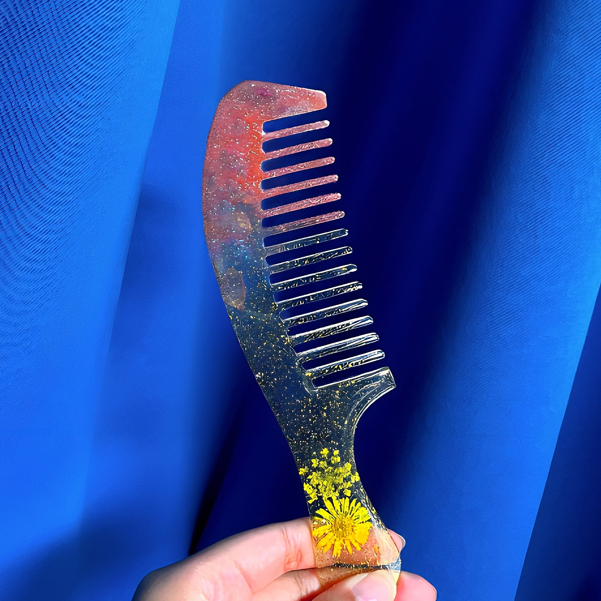
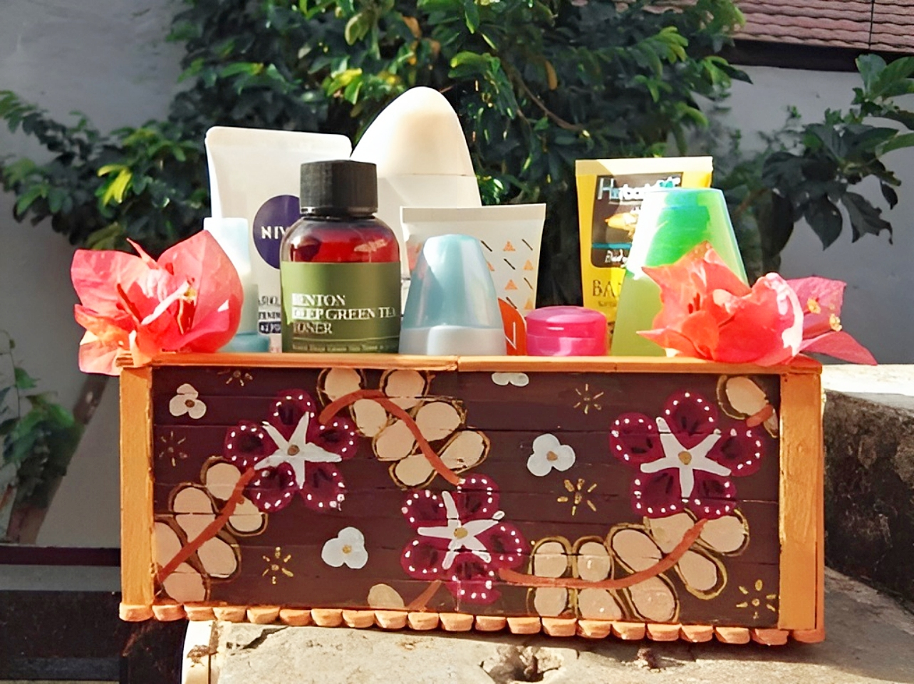
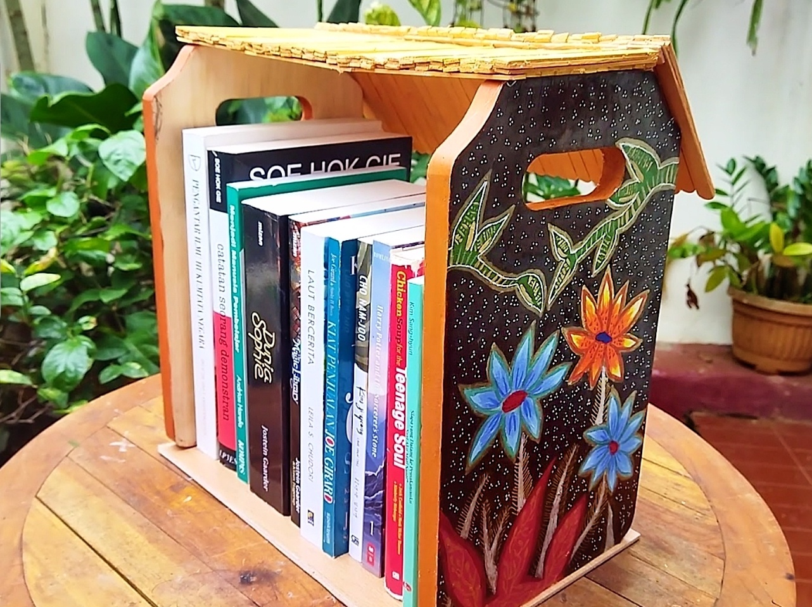
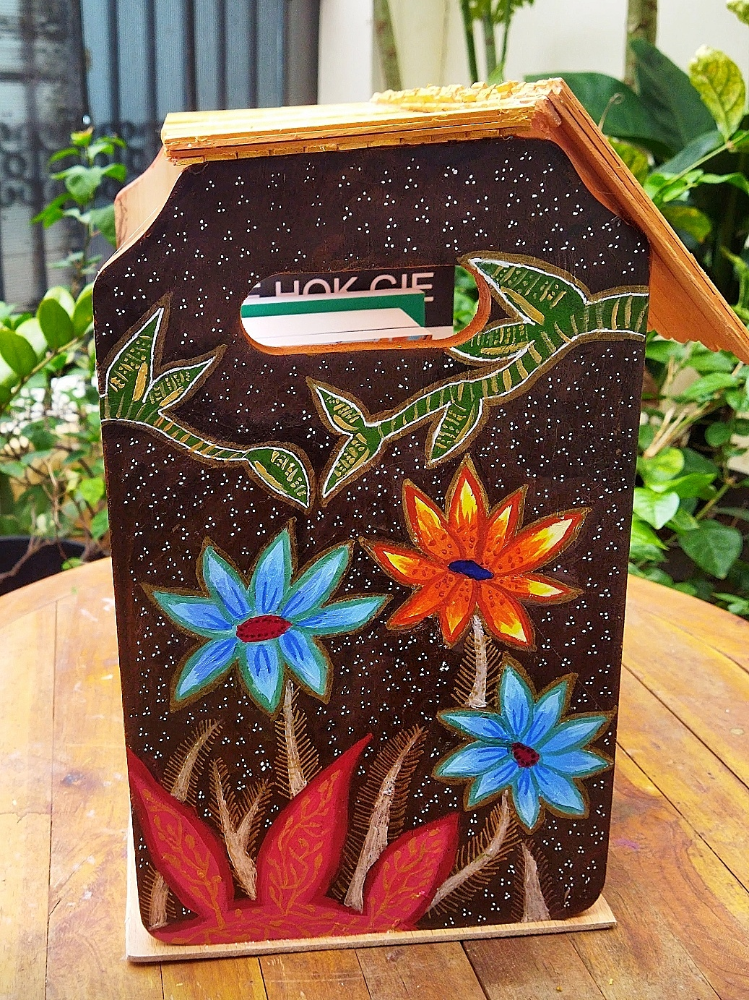
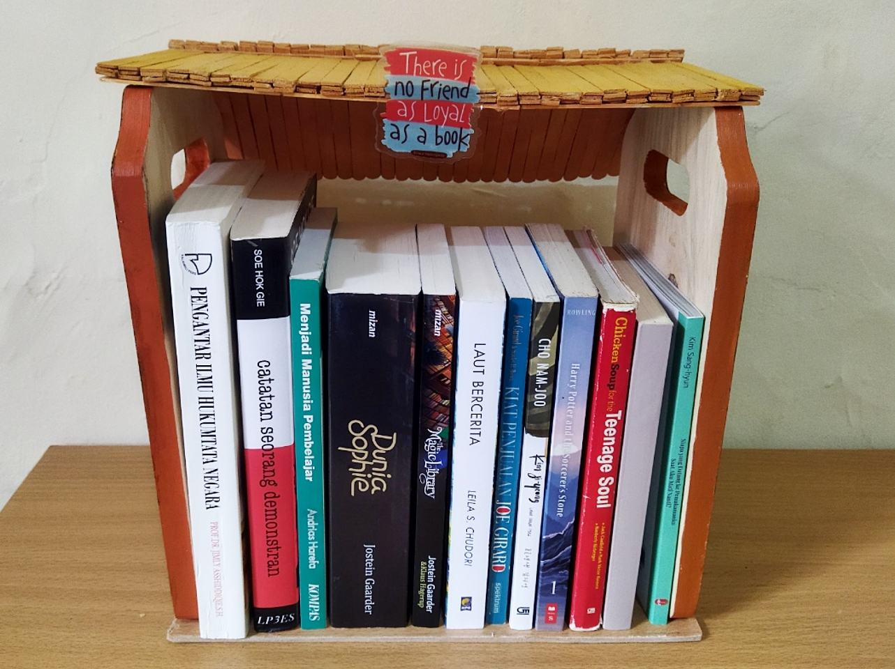

Nicea's Art Gallery.
Home
About Me
Batik
Paintings
Crafts
Beads
Crafts
Pinky Light Comb

“Pinky Light Comb” is a beautiful and stylish accessory for hair care. This comb is made of high-quality resin with an artistic design. It has a gradient of colors from pink to bright yellow, embellished with glittering glitter, and decorated with yellow daisy flowers embedded in it, creating an elegant and unique look. This comb also has flat and sturdy teeth that can comb your hair gently and effectively. “Pinky Light Comb” is the perfect choice to add charm and beauty to your care.
Multi-Purpose Batik Flower Box

This multi-purpose box is designed with stunning details and functions. It can be used to store various types of items, ranging from skincare products, stationery, to accessories. The batik painting that adorns the surface of the box not only adds aesthetic beauty but also preserves the nation’s culture. The classic and elegant batik motif reflects elegance and grace, making this box the perfect choice to store your valuable items in style.
The batik motif on this box is batik flower. This batik displays flowers in red and white colors and pieces of white flower petals arranged lengthwise with a brown background. The flowers have different shapes and sizes to avoid monotony. The flowers are arranged symmetrically and harmoniously, creating a beautiful and attractive impression. The dark brown background provides a strong contrast with the colors of the flowers, making this batik motif look more lively and bright. Batik flower depicts the beauty of nature and the richness of Indonesian culture, which should be proud and preserved.
Here is a video of my process in making this craft:
Batik House Bookshelf
1 / 3

Side View
2 / 3

Back View
3 / 3

Front View
❮
❯
This batik house bookshelf is a functional art work that combines recycling and aesthetics. Made from used cutting boards, exam boards, and ice cream sticks, this bookshelf not only shows creativity in recycling used materials but also dedication to preserving the environment. Each part of this bookshelf tells its own story, character and uniqueness.
The batik flower painting on this bookshelf adds value and beauty to the bookshelf, because it has bright colors and delicate motifs that are captivating. The batik flower painting also contains meaning and philosophy related to the life of Indonesian society, such as beauty, fertility, and happiness. I also added this batik flower painting to show my love and pride for the nation’s culture because batik is an Indonesian cultural heritage that has high artistic and historical value.